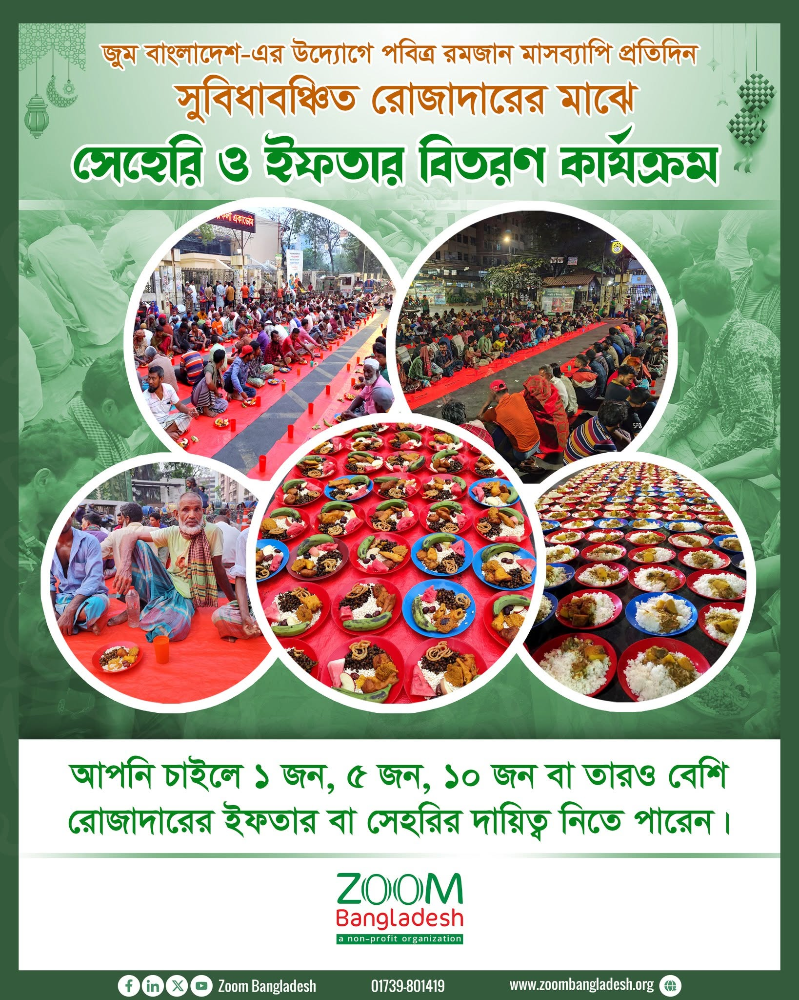
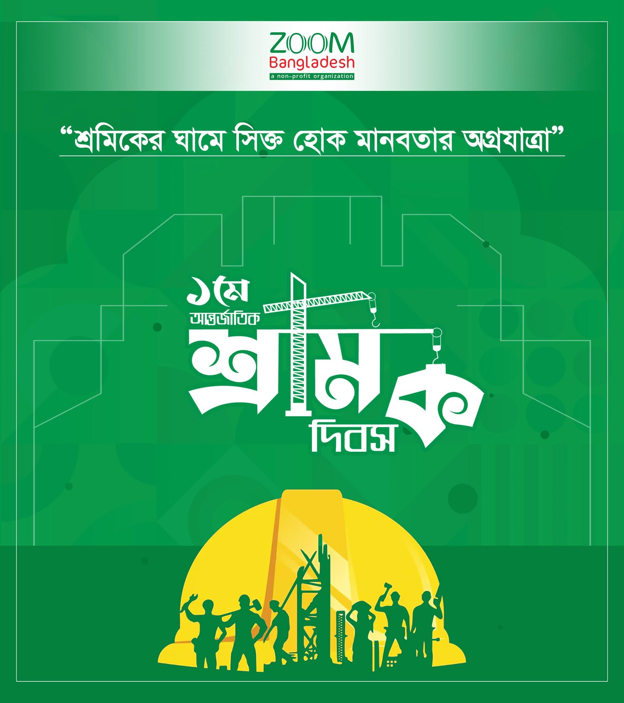
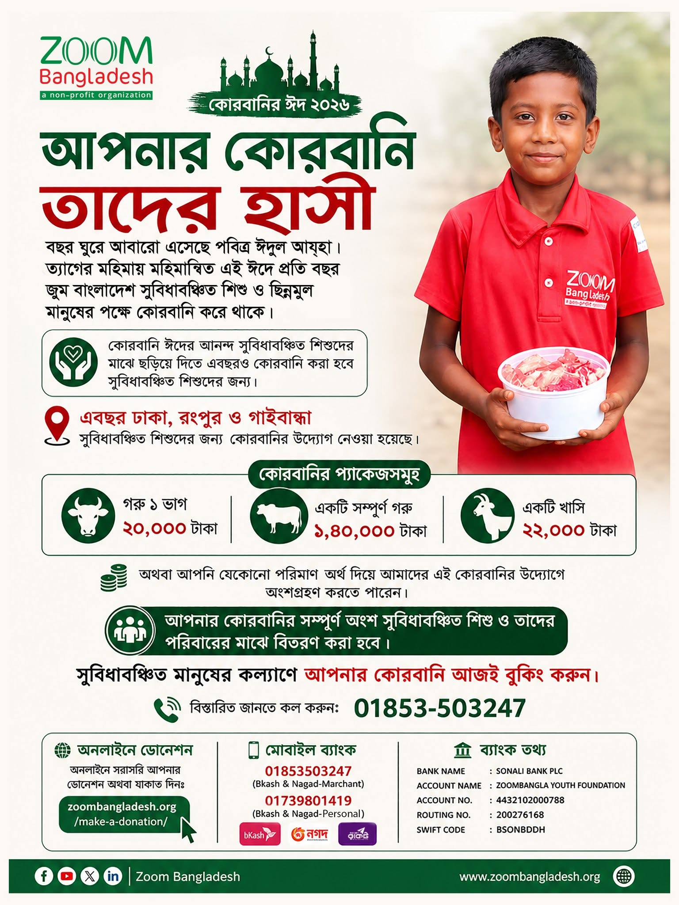
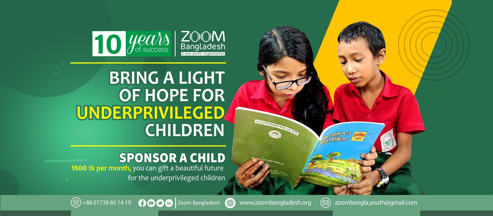

My Contribution
Campaign creative & event branding.
Designed a series of campaign posters and social creatives for Zoom Bangladesh's seasonal programs — Ramadan Sehri & Iftar distribution, Qurbani Eid, May Day labour-rights awareness, the 10th Foundation Day, and the Sponsor A Child initiative — keeping the organization's green-and-red identity consistent across every touchpoint.

Ramadan Sehri & Iftar Program
Daily meal-distribution campaign creative

10th Foundation Day
Anniversary campaign, 2016–2026

International Labour Day
May Day awareness creative

Qurbani Eid 2026
Donation-drive campaign design

Sponsor A Child
10-years-of-success web banner
Want creative like this for your organization?
Campaign posters, social kits, and full brand systems.
Let's Talk